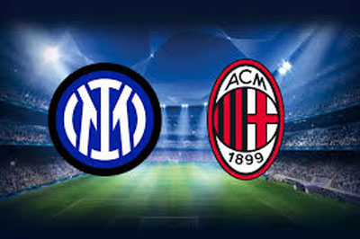
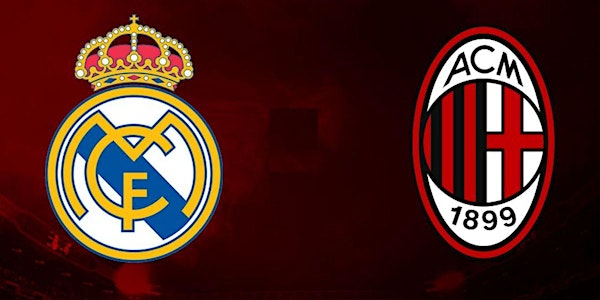

La rivalidad más enconada de los milanistas es frente al Inter de Milán, de la misma ciudad, con quien ha disputado un total de 209 encuentros desde que se enfrentasen por primera vez el 18 de octubre de 1908 en el conocido Derby della Madonnina. Dicho primer partido, de carácter amistoso, tuvo lugar en Chiasso, Suiza.
El 29 de junio de 1969, después de más de 60 años, se volvió a repetir el hecho de jugar el derbi de Milán en el extranjero; aquel encuentro, también amistoso, se disputó en el Yankee Stadium de Nueva York, en el ámbito del Torneo Ciudad de Nueva York. El final de esa década trajo consigo un asentamiento socioeconómico del país italiano y en especial en la Lombardía, cayendo en desuso varios calificativos en referencia a la clase de los seguidores de uno y otro equipo como casciavit o baùscia, ambos con tintes despectivos
La historia de los enfrentamientos evidencia que los milanistas dominaron a los interistas hasta el 1929, año de la consolidación del fútbol profesional con la Serie A. Por el contrario, en su período de oro, los nerazzurri tuvieron un gran predominio durante casi una década; de 1929 a 1937 los interistas tuvieron una racha de ¡17 partidos sin perder!, la mayor racha invicta en las grandes rivalidades del fútbol. Ambos conjuntos sitúan a la ciudad de Milán como la segunda con más títulos de la Copa de Europa / Liga de Campeones con diez, cuatro por detrás de Madrid, y la única en tener a dos campeones.
Otra gran rivalidad es con la Juventus con quien se ha enfrentado en 1 final de la Liga de Campeones de la UEFA, 5 de Copa Italia y 2 de Supercopa de Italia; cabe destacar que la Vecchia Signora estuvo 12 partidos sin perder desde 2016 hasta 2020, la mayor racha entre ambos conjuntos; para agregar, a la fecha de 2022, los bianconeri solo han perdido 3 de los últimos 27 partidos.
De carácter meramente deportivo, desde la creación de las competiciones europeas ambos compiten por la supremacía en la Copa de Europa / Liga de Campeones, resultando el balance en catorce títulos frente a siete,130 Pese a ello, no disputan un encuentro de relevancia desde 1990, aunque sí se vivieron remarcables duelos en rondas menos importantes del torneo; adicionalmente, llama la atención que los dos clubes con más títulos y finales disputadas, con trece de dieciséis para los madrileños y siete de once para los milaneses, solo se han enfrentado en una ocasión en la final, en la temporada 1957-58 con victoria madridista. Con ambos conjuntos españoles dichos enfrentamientos se extiende más allá de Europa siendo algunos de los conjuntos que más trofeos internacionales acumulan, dominando el palmarés UEFA.
Fernando Redondo y Clarence Seedorf lograron alzar la Liga de Campeones de la UEFA con ambos conjuntos aunque el argentino no jugó la final en 2003, mientras que el neerlandés si jugó como titular las 3 finales que ganó en 1998, 2003 y 2007; por su lado Ricardo dos Santos "Kaká" también jugó en ambos equipos, pero solo se coronó campeón de Europa en 2007 con el conjunto rossonero frente al Liverpool F. C. junto al jugador neerlandés. De estos 3 el neerlandés fue el único propiamente relevante en la historia de ambos equipos, ya que el jugador argentino tuvo una trayectoria discreta en el conjunto rossonero así como el brasileño tuvo un paso con más pena que gloria en el club blanco debido a sus continuas lesiones que lo alejaron de su mejor versión que le hizo ganar el Balón de Oro en 2007.